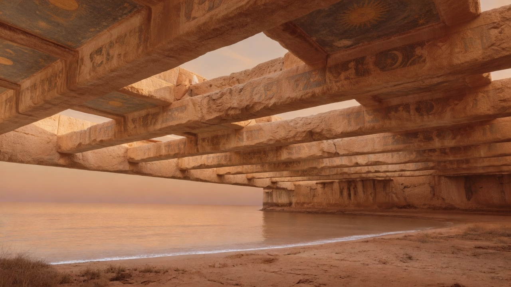
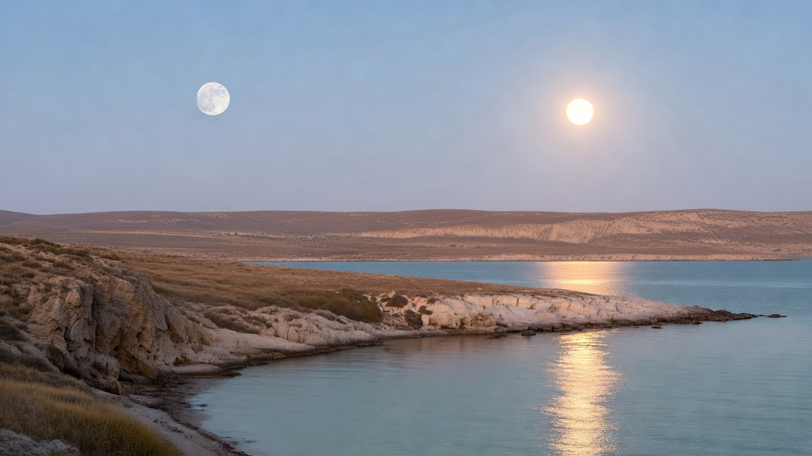
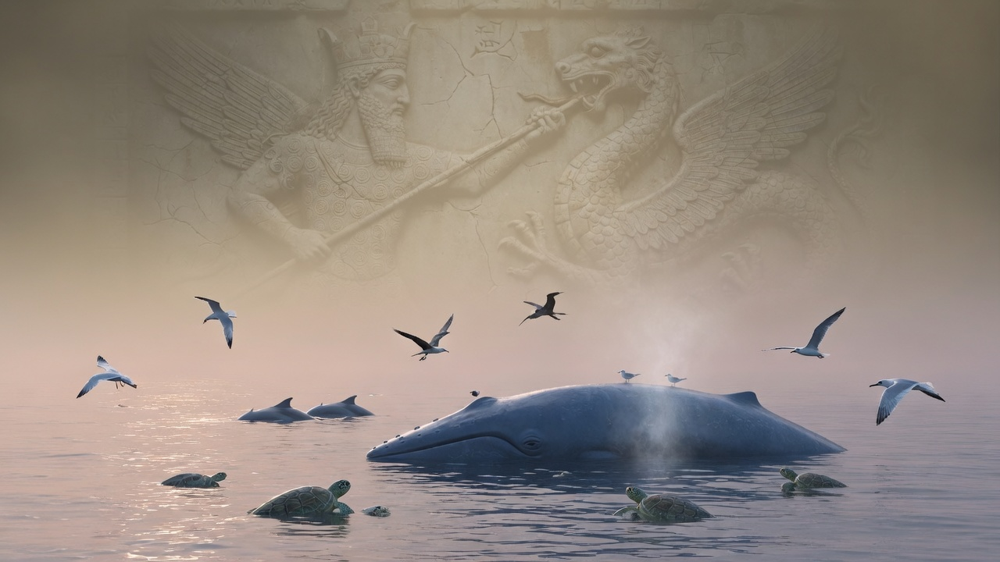

The world Genesis describes as a house God fills and rules
Genesis 1:1-2:3: The Overture in Sevens
Todd Townsend · · Updated July 2026
The first verse of the Bible contains exactly seven Hebrew words. The second contains fourteen. The closing paragraph, Genesis 2:1-3, contains thirty-five, and inside it sit three consecutive sentences of seven words each, every one carrying the phrase yom hashevi'i, "the seventh day," near its center. Across the whole unit the word elohim, "God," occurs thirty-five times (7 x 5); erets, "earth," twenty-one times (7 x 3); the verdict tov, "good," exactly seven times. These counts go back at least to Umberto Cassuto's commentary, and they are checkable: the arithmetic is in the text. Most of it is invisible in translation, and almost none of it would have been counted consciously by a listener. But the audible architecture, the drumbeat refrains, the seven paragraphs, the sevenfold "good," would have been felt by everyone, because this is a text built to be heard. The author has composed a week-shaped liturgy whose subject is the week, a poem that keeps sabbatical time before it ever mentions the Sabbath. The form is the first argument.
That observation sets the agenda for everything below, because it tells you what kind of text this is. Genesis 1:1-2:3 is not written in the register of modern scientific description, nor as a philosophical treatise on origins. It is the priestly overture to the Torah: a liturgical narrative in which God orders a dark, formless waste into a functioning cosmos by royal decree, installs his living image in it, and then takes up residence in a sanctified day. Every major move in the chapter, the demoted sun and moon, the blessed sea monsters, the image-language, the unclosed seventh day, becomes legible once you see that the cosmos is being narrated as a temple under construction, and that the construction is happening in deliberate, calm contradiction of every rival cosmology the first audience knew. The argument for that reading is below, anchor by anchor.
A boundary note before the text: the unit runs from 1:1 to 2:3. Genesis 2:4 opens with "These are the toledot of the heavens and the earth," the first of the book's recurring toledot headings, so 1:1-2:3 stands before the book's own structural skeleton begins: a prologue to the whole Torah, the overture before the curtain.
Before the beginning: 1:1-2
1 In the beginning, God created the heavens and the earth.
2 Now the earth: it was unformed and unfilled,
and darkness was over the face of the deep,
and the Spirit of God was hovering over the face of the waters.
Translation notes
Load-bearing. v. 1, "In the beginning" (bereshit). The word has no definite article, and that single fact has generated a millennium of debate. Read as an absolute noun, verse 1 is an independent sentence: "In the beginning, God created..." Read as a construct (so Rashi, the NJPS translation, and in a more sophisticated form Robert Holmstedt's relative-clause analysis), it is a dependent temporal clause: "When God began to create the heavens and the earth, the earth was unformed..." The grammar genuinely permits both; the Masoretic accents and the verse's perfect seven-word symmetry favor the freestanding heading, and that is the rendering above. Tim Mackie's classroom translation, for readers steeped in that corpus, is likewise an independent sentence ("In the beginning, Elohim created the skies and the land"), set apart as a seven-word summary prologue. A refinement, argued by John Walton and adopted in Mackie's Genesis 1 classroom notes, sharpens what the heading is doing. Hebrew reshit names not a first instant but an opening stretch of time: Job 8:7 calls the whole of Job's life before his calamity his reshit, and Jeremiah 28:1 can place the fourth year of Zedekiah's reign inside the reshit of that reign. "The beginning," then, is most naturally the seven-day period itself, and verse 1 is the title written over the week, not a report of a moment before it. Read that way, the stakes of the grammatical dispute nearly vanish: on either parsing, verse 2 describes the state of things when God's ordering work begins, and the narrative action proper starts at verse 3 with the first "And God said." Either way, the chapter's interest is not the manufacture of matter from nothing but the ordering of an unordered world. The verse is entirely compatible with creation from nothing, and that doctrine has other canonical footing in any case; it is simply not this verse's burden. Genesis 1:1 read as an ex nihilo proof-text is being asked a question the author is not answering here.
Load-bearing. v. 2, "unformed and unfilled" (tohu vavohu). Tohu on its own means a trackless waste, a desert, an uninhabitable nothing-place. Bohu never appears without tohu; the rhyming pair occurs in exactly one other verse in the Bible, Jeremiah 4:23, with both words appearing once more, split across parallel lines, in Isaiah 34:11. The conventional "formless and void" is fine, but "unformed and unfilled" is chosen here because it exposes the load the phrase carries: these two words are the table of contents for the whole chapter. Days one through three will answer tohu by giving the world form (three great separations); days four through six will answer bohu by giving it inhabitants (three realms filled). The problem stated in verse 2 is not that nothing exists. It is that what exists is unordered and uninhabited, and the seven days are the solution, in order.
Load-bearing. v. 2, "the Spirit of God was hovering" (ruach elohim merachefet). Ruach spans wind, breath, and spirit, and some translations (NRSV: "a wind from God," or even "a mighty wind," taking elohim as a superlative) flatten this to weather. Two facts resist that. First, elohim occurs thirty-five times in this unit, and in the other thirty-four it unambiguously means God; a lone superlative use in verse 2 would be a violent exception (the argument is Cassuto's, and it remains the standing objection that defenders of "wind" must argue around). Second, the verb. Merachefet comes from a root that appears only three times in the Hebrew Bible. In Jeremiah 23:9 it describes bones shaking. The only other occurrence of the verb in this stem is Deuteronomy 32:11, where it describes an eagle hovering, fluttering, over its young. That is bird language, not meteorology: something alive and attentive is poised over the waters. The translation keeps "Spirit" and "hovering" because the author has chosen a verb whose only parallel paints God as a bird brooding over what is about to hatch.
Depth. v. 2, "the deep" (tehom). The word stands without the article, almost like a name, and it is the linguistic cousin of Tiamat, the sea-goddess whose corpse Marduk splits to build the world in the Babylonian creation epic. The relationship is cognate rather than borrowed (both descend from a common Semitic word for the deep, as David Tsumura has shown), so one should not say Genesis "took" the word from Babylon. But an audience anywhere in the ancient Levant or in exile in Babylon could not hear "darkness over the face of tehom" without the mythic register humming, and that makes what the text does next so striking: nothing. The deep has no will, no voice, no resistance. There is no battle in this chapter. More on that below.
The double anchor in Deuteronomy 32 deserves a paragraph of its own, because it is one of the most beautiful intra-Torah hyperlinks in the Bible and almost no English reader can see it. Deuteronomy 32:10-11, the Song of Moses, describes God finding Israel "in a desert land, in a howling waste," and the word for waste is tohu, the same word as Genesis 1:2. The next line: "like an eagle that stirs its nest, that hovers (yerachef) over its young," the same rare verb as Genesis 1:2, in its only other occurrence in this sense. Two of the most distinctive words of Genesis 1:2 reappear together, in sequence, in the Torah's poetic summary of the exodus and wilderness. Within the finished Torah the effect is unmistakable whichever text was composed first: Israel's story is creation's story in miniature. God hovers over a tohu, and a people is formed out of the waste. The author of the Pentateuch wants you to read the exodus as a new Genesis 1, creation's pattern replayed on a people. Later prophets will run the link the other direction: Jeremiah 4:23 looks at Judah under judgment and says "I saw the earth, and look: tohu vavohu," creation running in reverse; Isaiah 45:18 insists that God "did not create it to be tohu; he formed it to be inhabited," which is simply Genesis 1's plot stated as a thesis. These are anchored inner-biblical readings, built on exact shared vocabulary, and they show that Israel's own authors read Genesis 1:2 the way argued here: tohu names the condition creation moves away from, and to which uncreation returns.
One more observation in verse 2 that pays off later: darkness is present before God says anything, and the chapter never says God created it. Within this unit darkness is simply there, part of the raw state. Watch what God does with it instead of obliterating it; that move, in verses 4-5, is one of the keys to the whole composition. (Isaiah 45:7, "forming light and creating darkness," later closes the metaphysical loophole; Genesis 1 itself leaves darkness uncreated and concentrates on its containment.)
The furniture the audience assumed
Everything from verse 6 onward presupposes a cosmos no modern reader pictures. The ancient Near Eastern world, Israel included, saw sky as a solid barrier holding back an ocean overhead: rain falls when its windows open (Genesis 7:11, "the windows of the heavens were opened"), and its surface is "hard as a cast-metal mirror" (Job 37:18, using the same verbal root as raqia, the "vault" of day two; the root raqa means to hammer or beat out metal, as in Exodus 39:3 where gold is hammered into sheets). Beneath the flat earth lay the waters of the deep; above the vault, more water; above that, God's throne room. Ezekiel sees exactly this layout in his vision: a gleaming raqia stretched over the heads of the living creatures, and a throne above it (Ezekiel 1:22-26). Genesis 1 does not argue for this furniture and does not reveal it; it assumes it, the way a modern writer assumes gravity. That is not a concession wrung from the text but a description of how the text communicates: revelation addresses its hearers inside their picture of the world rather than pausing to replace it, exactly as it speaks Hebrew rather than some timeless tongue. The chapter's claims are not about the architecture of the cosmos but about its management: who built it, by what means, for whom, and who, emphatically, does not run it. Reading the chapter as if it were addressing twenty-first-century cosmology questions makes it answer questions it never asks, and worse, makes its actual polemics inaudible. The polemics are the point, and they begin on day four.

The layered house the chapter assumes (not argues)
The shape of the week
The six days are not a string; they are a grid. Days one through three create domains by separation; days four through six fill those same domains with inhabitants and delegated rulers, in the same order.
Day one separates light from darkness; day four installs the lights that govern light and darkness. Day two separates the waters below from the waters above, opening sky and sea; day five fills sky and sea with birds and swimming creatures. Day three separates sea from dry land and clothes the land with vegetation; day six fills the land with animals and humanity, and hands the day-three vegetation over as food. Days three and six, the two days that each contain a double work, each receive a double "God saw that it was good." The correspondence is exact enough that the author can afford small artful asymmetries inside it, and the two triads answer, in order, the two-word diagnosis of verse 2: the forming days cure tohu, the filling days cure bohu. Then the seventh day stands outside the grid entirely, the only day with no evening, no morning, no work, and no counterpart. Three plus three plus one.

The six days are not a string; they are a grid
Within the grid, the engine of everything is speech. "And God said" (vayomer elohim) occurs ten times in chapter 1, eight creative decrees and two direct addresses to the human creatures (the blessing of verse 28 and the food grant of verse 29); rabbinic tradition would later speak of the "ten utterances" by which the world was made. There is no effort in this chapter, no tool, no material struggle, no rival. A king speaks, and reality is the kind of thing that obeys. Psalm 33:6 states the theology in one line: "By the word of YHWH the heavens were made, and all their host by the breath (ruach) of his mouth," which is just Genesis 1 compressed, word and breath together, the ruach of verse 2 and the speech of verse 3.
The chapter's other signature verb is hivdil, "to separate" (vv. 4, 6, 7, 14, 18). English readers hear a neutral word. A priest did not. Hivdil is the technical verb of the priestly vocation: "to separate (lehavdil) between the holy and the common, and between the unclean and the clean" (Leviticus 10:10); "I am YHWH your God, who has separated you from the peoples... you shall separate the clean beast from the unclean... and you shall be holy to me" (Leviticus 20:24-26). Creation in Genesis 1 is the first priestly act: God orders the cosmos the way priests are commanded to order Israel's life, by drawing boundaries that make a habitable, holy order possible. The cosmos is being set up like a sanctuary, which is the first hint of where the seventh day is heading.
Notice also what God names and when. On days one through three God names the great fixed domains: Day, Night, Skies, Earth, Seas. Then the naming stops. The creatures of days five and six are not named; they are blessed. Naming in this world is an act of sovereign ordering, and the narrator is leaving room, deliberately, for the human task that begins in chapter 2, where the adam names the animals. The image-bearer will take up the work the King began.
Days one to three: forming
3 And God said, "Let there be light." And there was light.
4 And God saw the light: that it was good. And God separated the light from the darkness.
5 And God called the light Day, and the darkness he called Night. And there was evening and there was morning: day one.
6 And God said, "Let there be a vault in the midst of the waters, and let it be a separator between waters and waters."
7 And God made the vault, and he separated the waters that were under the vault from the waters that were above the vault. And it was so.
8 And God called the vault Skies. And there was evening and there was morning: a second day.
9 And God said, "Let the waters under the skies be gathered to one place, and let the dry land appear." And it was so.
10 And God called the dry land Earth, and the gathering of the waters he called Seas. And God saw that it was good.
11 And God said, "Let the earth sprout sprouts: plants seeding seed, fruit trees making fruit, each by its kind, with its seed in it, upon the earth." And it was so.
12 And the earth brought forth sprouts: plants seeding seed by their kinds, and trees making fruit with their seed in them, by their kinds. And God saw that it was good.
13 And there was evening and there was morning: a third day.
Translation notes
Load-bearing. v. 5, "day one" (yom echad). Hebrew has ordinal numbers and uses them for days two through seven; day one alone gets the cardinal, "one day," not "first day." Days two through five then appear without the definite article ("a second day," "a third day..."), and the article finally lands on days six and seven: "the sixth day" (yom hashishi, v. 31), "the seventh day" (yom hashevi'i, three times in 2:2-3). The translation preserves all of this because it is the author's own pacing device: the count begins almost casually, "one day," and the grammar itself tightens as the week approaches its goal, the definite article functioning like a drumroll into days six and seven.
Depth. v. 11, "sprout sprouts... seeding seed... fruit trees making fruit." The Hebrew piles up cognate constructions (tadshe... deshe, mazria zera, etz peri oseh peri), and the translation keeps the redundancy on purpose. The land is commanded to produce vegetation that carries its own continuation inside itself, "with its seed in it." Day three builds self-perpetuation into the order: creation is designed to keep creating.
Depth. v. 7, "And God made the vault." Here and at several points the chapter alternates between command-and-result ("Let there be... and it was so") and direct statements that God "made" the thing. The narrator holds both: creation by fiat, and God's own hands-on involvement, plus, in verses 11-12 and 24, a third mode, where the earth itself is commissioned as an agent ("Let the earth sprout... and the earth brought forth"). God creates a world that participates in its own creating.
Three things in this movement carry weight for the whole.
First, the treatment of darkness. God speaks light into existence, evaluates it ("God saw the light: that it was good," the only time the approval formula names its object), and then does something unexpected with the darkness of verse 2: he does not abolish it. He separates it from the light, gives it a name, Night, and a jurisdiction. The same happens to the waters of the deep on days two and three: not eliminated but bounded, assigned a place, "gathered to one place," and named Seas. Jon Levenson has put this more sharply than anyone: in Genesis 1 the dark and the deep, the ancient symbols of chaos, are not destroyed but mastered, contained within an order they no longer threaten but in which they still really exist. "Good" (tov) in this chapter means functioning, ordered, fit for purpose; it does not mean that nothing wild remains. Night still falls. The sea still roars at its boundary (the picture Job 38:8-11 and Jeremiah 5:22 paint, of the sea shut behind doors and told "thus far"). That is not a flaw in the composition; it is the composition. The world Genesis 1 delivers is ordered and very good and still has edges, and the rest of the Bible's drama, starting with a creature of the wild slipping into the garden two chapters later, happens at those edges.
Second, the missing verdict of day two. Count the approvals and you find seven, but they do not fall one per day: day two has none, and day three has two. The Greek translators were bothered enough to add "and God saw that it was good" to verse 8, flattening the pattern, which is itself evidence that the Hebrew's irregularity is original and felt. The likeliest reading is the one the old Jewish commentators already gave: the work begun on day two, the dividing of the waters, is not finished until day three gathers the lower waters and dry land appears; the verdict waits until the job is done, and day three collects both. The author is more interested in the integrity of the work than in the symmetry of the scoreboard, and the sevenfold total is preserved at the level of the whole, where, as we have seen, this author does all his counting.
Third, "evening and morning." The refrain runs "and there was evening and there was morning," in that order, and Jewish liturgical time has reckoned the day from sunset ever since. Within the chapter the formula does something simpler and stranger: it makes time itself the first created thing. Before there is a sun, there is a day. Light, alternating with bounded darkness, is the first creature, and the day-night rhythm exists for three full days before the sun shows up to be its servant. To us that is a puzzle about physics. To the author it is the setup for the chapter's most aggressive move.
Days four and five: the rivals demoted
14 And God said, "Let there be lamps in the vault of the skies to separate the day from the night, and let them be for signs and for appointed times, and for days and years;
15 and let them be for lamps in the vault of the skies to give light upon the earth." And it was so.
16 And God made the two great lamps: the greater lamp for the governing of the day, and the lesser lamp for the governing of the night; and the stars.
17 And God set them in the vault of the skies to give light upon the earth,
18 and to govern the day and the night, and to separate the light from the darkness. And God saw that it was good.
19 And there was evening and there was morning: a fourth day.
20 And God said, "Let the waters swarm with swarms of living creatures, and let flying creatures fly above the earth, across the face of the vault of the skies."
21 And God created the great sea dragons, and every living, moving creature with which the waters swarm, by their kinds, and every winged flyer by its kind. And God saw that it was good.
22 And God blessed them, saying, "Be fruitful and multiply and fill the waters in the seas, and let the flying creatures multiply on the earth."
23 And there was evening and there was morning: a fifth day.
Translation notes
Load-bearing. v. 14, "lamps" (me'orot). Nearly every English Bible says "lights," which is accurate and bloodless. Ma'or is not the ordinary word for light (that is or, used on day one); it means a light-bearer, a lamp. And its distribution in the Torah is stunning: outside Genesis 1, the Torah uses ma'or exclusively for the lamp of the sanctuary, the menorah and its oil, "oil for the lamp" (Exodus 25:6; 27:20; 35:8, 14, 28; 39:37; Leviticus 24:2; Numbers 4:9, 16). A reader moving through the Torah in order meets the word here for the sun and moon, and then for the rest of the Pentateuch meets it only inside the tabernacle. The cosmos has light fixtures, and they are sanctuary furniture. This is the single strongest lexical thread tying Genesis 1 to the temple reading, and it is why "lamps" is the right rendering.
Load-bearing. v. 14, "appointed times" (mo'adim). Most translations say "seasons," and the modern reader thinks of autumn. Mo'ed in priestly usage means an appointed assembly, a liturgical festival: "These are the appointed times (mo'adei) of YHWH, the holy convocations" (Leviticus 23:2, 4); "he made the moon for the appointed times" (Psalm 104:19). The sun and moon are installed to run Israel's worship calendar. Pesach, Yom Kippur, Sukkot, all dated by the moon, are written into the sky's job description on day four.
Load-bearing. v. 21, "the great sea dragons" (hattanninim haggedolim). "Great whales" (KJV) and "great sea creatures" domesticate a loaded word. The tannin is the sea dragon of Canaanite myth (Ugaritic tnn), the chaos monster who fights the gods, and Israel's own poets remember the fight: "You broke the heads of the dragons (tanninim) on the waters; you crushed the heads of Leviathan" (Psalm 74:13-14); "In that day YHWH will punish Leviathan... the dragon that is in the sea" (Isaiah 27:1). Genesis 1 takes the monster of the rival mythologies and the monster of Israel's own poetry and files it under day five.
Now read days four and five together as the first audience would have heard them, with Babylonian and Canaanite cosmology in their ears.
Day four never names the sun and moon. The Hebrew words exist, shemesh and yareach, and the author conspicuously avoids them, because across the ancient world those words are also divine names: Shamash the sun god, judge of heaven and earth; Yarikh the moon god. The two most worshipped objects in the ancient sky enter this narrative anonymous, as "the greater lamp" and "the lesser lamp." They are created things, made on day four, latecomers; the day-night rhythm they supposedly control was running for three days without them. They are installed ("God set them," the verb you use for placing an object) in a vault like fixtures in a ceiling. Their "governing" (memshelet, real royal vocabulary) is a delegated shift-work: one runs the day shift, one the night shift, and their portfolio is to mark time for the worship of the God who made them. And then the stars, the deities of every astral religion, Babylon's serious science and serious theology at once, get two Hebrew words, a famous afterthought: "and the stars" (ve'et hakkokhavim). Deuteronomy 4:19 will warn Israel against bowing to "the sun and the moon and the stars, all the host of heaven"; Genesis 1:14-19 is that warning's metaphysical foundation, executed with a straight face and devastating economy. The gods of the nations are your calendar.

Lights for the earth — lamps in the vault, not lords (Genesis 1:14-18)
Day five does the same to the sea. The verb bara, "create," which the Hebrew Bible uses only with God as subject, has not appeared since verse 1; the narrator has been content with "said" and "made." It returns, with emphasis, for one creature: "And God created the great sea dragons." Of all things in the chapter, the dragons get the creation verb, as if the author leaned on the word. In Babylon, the sea monster is the enemy: Marduk becomes king by killing Tiamat and her brood and building the world from the corpse. In Ugarit, Baal wins kingship by defeating the Sea and is hymned for crushing the dragon. In Genesis, the dragons are not adversaries; they are day-five wildlife, created on schedule, between the fish and the birds. And then, the deepest cut: "And God blessed them." The first blessing in the Bible falls on sea monsters and birds. Israel's God does not fight the dragon to win his throne. He made the dragon, and likes it. Psalm 104:26 catches the tone exactly: Leviathan, "whom you formed to play" there, the dragon of the myths recast, in Israel's own praise, as a creature at play in God's sea. Where the chapter's calm comes from is now visible: other biblical poets can still use the combat myth as imagery (Psalm 74, Isaiah 27, Isaiah 51:9-10), but the author of Genesis 1, who plainly knows the genre, narrates a creation with no battle in it at all, because for him there was never a rival to fight. The omission is the polemic.

God created the great sea creatures and blessed them (Genesis 1:21-22)
Day six: the image installed
24 And God said, "Let the earth bring forth living creatures by their kinds: livestock and creeping things and wild animals of the earth, by their kinds." And it was so.
25 And God made the wild animals of the earth by their kinds, and the livestock by their kinds, and every creeping thing of the ground by its kind. And God saw that it was good.
26 And God said, "Let us make humankind as our image, according to our likeness, and let them rule over the fish of the sea and the flying creatures of the skies and the livestock and all the earth, and every creeping thing that creeps on the earth."
27 And God created the human as his image:
as the image of God he created him;
male and female he created them.
28 And God blessed them, and God said to them, "Be fruitful and multiply, and fill the earth and subdue it, and rule over the fish of the sea and the flying creatures of the skies and every living thing that creeps on the earth."
29 And God said, "Look, I have given you every seed-bearing plant on the face of all the earth, and every tree that has seed-bearing fruit: for you it shall be, for food.
30 And to every wild animal of the earth and every flying creature of the skies and everything that creeps on the earth that has the breath of life in it: every green plant for food." And it was so.
31 And God saw all that he had made, and look: very good. And there was evening and there was morning: the sixth day.
Translation notes
Load-bearing. v. 26, "Let us make" (na'aseh). The lone first-person plural in the chapter. Three readings circulate. A plural of majesty is the weakest: Hebrew does not use royal plurals with verbs. Christian readers are not wrong to confess that the Creator is the triune God; the narrower literary question is what this plural could signal in the Hebrew Bible's own idiom and in this audience's hearing, and a direct Trinitarian reference lies outside both. The execution in verse 27 (singular: "in his image") shows the author meant something his first hearers could parse. The reading with real Hebrew-Bible support is that God is addressing his heavenly court, the divine council that the Old Testament assumes everywhere: "Whom shall I send, and who will go for us?" (Isaiah 6:8, the identical singular-plural alternation, in a throne-room scene); the host of heaven standing around the enthroned LORD in 1 Kings 22:19; the same "us" in Genesis 3:22 and 11:7; the "sons of God" of Job 1 and Psalm 89:6-7. Michael Heiser pressed this reading and also its crucial limit: the announcement is made to the council, but the council does not do the making and is not the model. Verse 27 executes in the singular, three times: God created, in his image. Humanity images God, not the angels. The King informs his court that he is about to install his own statue.
Load-bearing. v. 26, "as our image" (betsalmenu). The conventional "in our image" suggests the image is a property poured into us, something we carry. The Hebrew preposition be can also mark capacity or essence ("I appeared to Abraham... as El Shaddai," Exodus 6:3, the same construction), and with this noun that reading has teeth, because tselem is a concrete word: a carved or cast statue. Israel uses it for idols (Numbers 33:52; 2 Kings 11:18; Ezekiel 7:20; Amos 5:26), for the golden mice the Philistines cast (1 Samuel 6:5, 11), for Nebuchadnezzar's colossus (the Aramaic cognate, Daniel 3:1). Humans do not possess a picture of God somewhere inside them; humans are the statue, the living image set up in the cosmos the way a god's image is set up in a temple, the way a king's statue is set up in a conquered province to declare whose realm this is. Render it "as our image" and the whole royal-cultic logic surfaces. Demut, "likeness," then guards the claim from the other side: the statue resembles and represents its original without being it. The pairing is not theological hairsplitting; it is how the language actually worked. A basalt statue of a ninth-century king of Guzana, found at Tell Fekheriye in Syria, carries a bilingual inscription that calls the one statue both "likeness" (dmwt) and "image" (tslm), the exact Aramaic cognates of the word pair in Genesis 1:26, used as plain monumental vocabulary for a royal likeness that stands in for the king where he is not bodily present.
Load-bearing. vv. 26, 28, "rule" (radah) and "subdue" (kavash). Throne-room verbs, both. Radah is what kings do: "May he rule from sea to sea" (Psalm 72:8, of the ideal king); Solomon "ruled over all the region west of the Euphrates" (1 Kings 5:4 [4:24]). Kavash is the subjugation of land: "the land is subdued before YHWH" (Numbers 32:22; Joshua 18:1). The verbs are strong because the office is real, and because verse 2's leftovers are real: a world with bounded seas and named darkness is ordered, not tame, and the image-bearers are installed to extend the King's order into it. Note where Genesis aims the verbs and where it does not: humans rule fish, birds, animals, earth; nothing here authorizes humans ruling humans.
Depth. v. 27, the poetry. Verse 27 is the chapter's only versified line, three cola, with bara hammered three times and the word order inverted in the second colon ("as the image of God he created him"). Prose pauses and becomes liturgy at the moment of humanity's creation; the form bows. And the third colon quietly detonates the royal ideology of every neighboring culture: "male and female he created them." In Egypt, the Pharaoh is the living image of his god; the boy-king's very name, Tutankhamun, means "living image of Amun." In Assyria, courtiers flatter the king as the image of Bel. One man, the man on the throne, is the god's statue, and everyone else exists to serve the statue. Genesis 1:27 takes the most exclusive title in ancient politics and hands it to humankind as such, male and female, every child of Adam a royal image. It is the most radical sentence in the chapter, and its first audience, who knew exactly who normally got called the image of a god, was positioned to hear precisely how much was being given away.
Depth. vv. 29-30, the food grant. The first humans are assigned seed plants and fruit; the animals get the green plants. The chapter's ideal picture seats humans and animals at one table, with no creature on the menu, and the image-bearing rulers fed by their King rather than feeding him. The Bible itself marks this as a deliberate baseline: after the flood the diet is explicitly renegotiated, "every moving thing that lives shall be food for you; as I gave you the green plants, I give you everything" (Genesis 9:3), a verse that quotes this one in order to expand it. Whatever one concludes about the prelapsarian biology, the author has drawn the original charter narrowly on purpose, and later scripture knows it.
Day six is where the chapter's two big ideas, cosmos-as-temple and human-as-image, snap together, because they were always one idea. In the ancient world you finished building a temple by installing the god's image in it; an image-less temple was an empty shell. Genesis 1 has been furnishing a sanctuary for five days, lamps in the ceiling included, and on the sixth day the image goes in. But the image of this God is not a carved thing. The second commandment will forbid manufactured images of YHWH, and Genesis 1 already tells you why: the position is filled. God has an image in his cosmic temple, and it breathes. Every human being is a walking claim that this world is YHWH's realm, which is also why, two chapters after our unit ends, an assault on a human being can be treated as treason against the King (Genesis 9:6 grounds the homicide law in the tselem), and why Genesis 5:1-3 can describe Adam fathering Seth "in his likeness, as his image," the same word pair: the image is not a possession of the first man but a transmissible sonship, a family resemblance that runs down the generations of the whole race.

The image goes in—and it breathes
Then the verdict widens. Through six days the formula evaluated parts: the light, the seas and land, the vegetation, the lamps, the creatures. Verse 31 evaluates the system: "God saw all that he had made, and look: very good" (tov me'od), the seventh and climactic tov, spoken over the whole now that every part is in relationship with every other. Very good, with night still in it, and seas still in it, and a ruler-creature whose whole job implies a world that needs ruling. "Very good" is the verdict on a finished temple, not on a finished story. The story has not started yet.
Day seven: the enthronement
2:1 And the heavens and the earth were finished, and all their host.
2 And God finished, on the seventh day, his work that he had done; and he ceased, on the seventh day, from all his work that he had done.
3 And God blessed the seventh day and made it holy, for on it he ceased from all his work that God had created in the making.
Translation notes
Load-bearing. v. 2, "he ceased" (vayishbot). This is the verb shabat, and it does not mean to nap, recover, or recharge; it means to stop, to cease. Nothing in Genesis 2:1-3 says or implies that God was tired (Isaiah 40:28 will say flatly that the Creator "does not faint or grow weary"). Translating "rested" imports a weariness the text excludes and obscures what the cessation positively is, which the ancient temple context supplies below. When Exodus 31:17 later adds that on the seventh day God "ceased and was refreshed" (shabat vayyinnafash), it is pressing the anthropomorphism further for the sake of Israel's imitation, not correcting Genesis.
Load-bearing. vv. 2-3, "his work" (mela'khto). Hebrew has several words for work; mela'khah is the one the Torah uses for two things above all: the labor prohibited on the Sabbath ("you shall not do any mela'khah," Exodus 20:10) and the craftsmanship of the tabernacle (Exodus 31:3-5; 35:21 and throughout). God's six days are described with precisely the word Israel will hear every week in the command and every time the sanctuary is built. The vocabulary is laying track.
Depth. v. 2, "And God finished, on the seventh day." The Masoretic text says God finished his work on the seventh day, which sounds as if some work spilled into day seven; the Samaritan Pentateuch and the Greek translators both read "on the sixth day," an obvious smoothing, which is why the harder Hebrew reading is original. And the harder reading is better theology: the seventh day is not an appendix after the work; the work is not complete until the seventh day exists. The completing act of creation is the ceasing itself. Day seven is the last thing God makes.
Depth. v. 3, "created in the making" (bara... la'asot). The unit's last two words are odd Hebrew, literally "which God created to make/do." Most translations smooth it to "created and made," a fair hendiadys. The translation above keeps a trace of the strangeness. Whether or not one hears in the infinitive a hint of ongoing purpose (created so as to keep doing), the syntax leaves the final clause looking forward rather than sealed shut, of a piece with everything else about this day.
Now the day itself. Genesis 2:1-3 is thirty-five words of Hebrew, seven times five, and at its heart sit three consecutive sentences of seven words each, "the seventh day" planted near the middle of each: God finished on the seventh day; God ceased on the seventh day; God blessed the seventh day and made it holy. Around them, total formal silence: no "And God said," no evaluation, no evening, no morning. Every other day closes with the refrain; day seven never closes. The omission is as deliberate as everything else in this most deliberate of chapters, and later biblical authors, as we will see, treat the openness it creates as real and build on it.
Three verbs carry the day, and the third is the summit: vayqaddesh, "and he made it holy." This is the first occurrence of the root qdsh, holiness, in the Bible, and it is worth pausing over what receives it. Not a mountain, not a shrine, not a city, not a person: a day. The first holy thing in the Bible is a piece of time. Space will get its sanctuaries later, and they can be built and burned; the sanctuary God builds into creation itself is indestructible because it is temporal, arriving every seventh sunset wherever God's people are, including, pointedly, Babylon. For an audience with no temple, the claim that the original sanctuary was never made of stone is not an abstraction.
What, positively, is God doing on a day when he has ceased? Here the ancient context is not optional background; it is the meaning. Across the ancient Near East, what a god does upon completing creation, or upon the completion of his temple, is rest in it, and divine rest is not sleep, it is enthronement: the god takes up residence and begins to reign over a now-ordered realm. The Babylonian epic makes the link explicit: humans are created to carry the gods' toil "that they may rest," and the gods' first act after creation is to build Marduk a temple, Esagila, as the resting place where his kingship is celebrated. At Ugarit, Baal's victory is consummated by the building of his palace, and the account of its construction is a seven-day account: fire blazes in the house six days, "then, on the seventh day, the fire departs," and the palace stands complete, the throne occupied. Israel's own scriptures speak the same dialect: "Arise, O YHWH, to your resting place... For YHWH has chosen Zion... 'This is my resting place forever; here I will sit enthroned'" (Psalm 132:8, 13-14), and Isaiah 66:1 runs the logic at cosmic scale: "Heaven is my throne and the earth is my footstool; what house could you build me? Where is the place of my rest?", which is to say: my temple is already built, and you are standing in it. John Walton and Jon Levenson, working independently along these lines, have made the conclusion hard to avoid: Genesis 1 narrates the construction and inauguration of the cosmic temple, and the seventh day is the day the King sits down on the throne of a world that now runs as he ordered it. God's ceasing is not absence. It is the rest of an enthroned ruler whose realm is functioning, with his image on duty in the throne room.
Read that way, the long-noticed web of links between Genesis 1:1-2:3 and the tabernacle chapters of Exodus stops being a curiosity and becomes the Torah's own commentary. The instructions for the tabernacle come as seven divine speeches ("And YHWH said to Moses..." seven times across Exodus 25-31), and the seventh speech is the Sabbath command. The craftsman Bezalel is filled with ruach elohim, the Spirit of God of Genesis 1:2, and with wisdom, to do the mela'khah. And when the work is done, the narrator of Exodus reaches for Genesis 1's exact closing sequence: "And Moses saw all the work, and look: they had done it as YHWH commanded... and Moses blessed them" (Exodus 39:43, echoing Genesis 1:31 and 2:3); "And Moses finished the work" (Exodus 40:33, echoing Genesis 2:2); and the completed sanctuary is anointed and made holy (qiddesh, Exodus 40:9, echoing Genesis 2:3). Saw, finished, blessed, sanctified: the tabernacle account is written to be heard as a new Genesis 1, a creation in miniature, a portable cosmos. The equation runs both ways. If the tabernacle is a little cosmos, the cosmos was always a great tabernacle, and the priestly author has signed the equation in shared vocabulary: the me'orot burning in both ceilings, the mela'khah done and ceased in both accounts, the Spirit hovering over both beginnings.
Against Babylon the seventh day lands one final blow, the sharpest in the chapter. In the Babylonian story, divine rest is purchased: the gods are exhausted by labor, so humanity is invented as a slave race, kneaded from the blood of an executed rebel god, "on whom the toil of the gods will be laid, that they may rest." Gods rest because humans work; that is what humans are for, and Babylon's audience heard it recited every new year at the Akitu festival. None of this requires literary borrowing in either direction; it requires only what exile guaranteed, a shared cultural air in which these were the reigning stories, and Genesis engages them point by point in order to refuse them. Genesis inverts every term. Humans are made not from a demon's blood but as God's royal image; they are not the gods' caterers but guests at God's table, handed the produce of day three; and God's rest is not purchased by human toil at all, since God was never tired. Instead, in the Torah's first landing of this text, God's rest is given away: "Remember the Sabbath day, to keep it holy... for in six days YHWH made the heavens and the earth, the sea and all that is in them, and he rested on the seventh day; therefore YHWH blessed the Sabbath day and made it holy" (Exodus 20:8-11, quoting Genesis 2:3's blessed-and-sanctified pair back to it). In Babylon, humans labor so the gods can rest. In Israel, God ceases so that humans, down to the slave, the immigrant, and the ox, can be commanded to stop working and share the King's own seventh day. The Sabbath command is Genesis 1's economics: an anti-Babylon, enacted weekly.
One honest note on the temple-cosmos corpus, since this article leans on it. Walton has paired the cosmic-temple reading with a stronger lexical claim, that bara denotes assigning function rather than producing things, so that Genesis 1 narrates no material origination at all. The functional orientation of the chapter is real, but it rests on the chapter's structure (separating, naming, appointing roles and rulers), not on the lexicon; bara takes concrete products as objects, sea dragons and humans among them, and the verb's actual distinctive is its subject, God alone, always. Take the temple; leave the dictionary entry.

The seventh day has no evening
Where the overture lands
The author ends on a day with no evening, and the rest of the Bible treats that open edge as load-bearing. The trajectories below are of two kinds, and it matters which is which: some later texts cash out a shape Genesis 1 deliberately built (anchored trajectories), and some reread Genesis 1 in light of where the story eventually arrived (retrospective, figural moves). Both are evidence; they are different kinds of evidence.
The Sabbath trajectory is anchored, twice over. Exodus 20:11 and 31:17 explicitly cite the seventh day as the pattern for Israel's week, the Torah's own first reading of our text. And the missing evening becomes an exegetical hinge: Psalm 95 can still summon Israel "today" into "my rest," and the author of Hebrews, quoting Genesis 2:2 directly ("And God rested on the seventh day from all his works"), reasons that since God's works were finished from the foundation of the world and yet a "today" of entry remains, the seventh day is still open and "a Sabbath-keeping remains for the people of God" (Hebrews 4:3-10). Jesus stands on the same open edge in a Sabbath controversy: "My Father is working until now, and I am working" (John 5:17), which presumes the shared Jewish reading that God's seventh day has not ended, his governing rest continuing even as he sustains the world within it. Whether or not the missing evening stood in Hebrews' direct line of sight, the openness it marks is what both authors build on: the seventh day's lack of closure is a feature of the text they received, not a lens they imported.
The image trajectory is anchored within the Torah (Genesis 5:1-3; 9:6, both re-quoting the tselem) and in Psalm 8, which is day six set to music: the human crowned "a little lower than the elohim," given "rule" (the verbs of dominion) over flock and beast, birds of the heavens, fish of the sea, the day five and six inventory recited back. When Paul calls the Messiah "the image (eikon) of God" and "the firstborn of all creation" in whom all things were created (Colossians 1:15-16; 2 Corinthians 4:4), he is making a retrospective, figural identification, but one that rides the rail Genesis laid: if the image is a royal office held by humankind, then a true human king who finally executes the office is what the office was always shaped for. Hebrews 2 splices the two trajectories, reading Psalm 8 of the man who has actually been crowned.
The word trajectory runs from "And God said," ten times, through Psalm 33:6 and the personified Wisdom who attends creation in Proverbs 8:22-31, to the most famous citation of our passage in existence. John 1:1-5 opens with the Septuagint's own first words, en arche, and rewrites the scene: "In the beginning was the Word... all things came into being through him... the light shines in the darkness, and the darkness did not overcome it." The citation is anchored, unmistakable to any Greek-reading Jew; the identification of the Word as a person who "became flesh" is John's figural move, prepared by the Wisdom tradition but finally answerable to where John believes the story arrived. Paul makes the parallel move with day one: "the God who said, 'Out of darkness light shall shine,' has shone in our hearts" (2 Corinthians 4:6), the first fiat replayed as new creation.
And the bounded remainders, the night and the sea that "very good" contained but did not remove, are finally retired at the far end of the canon. The new creation of Revelation is written as a point-for-point release of Genesis 1's held tensions: "the sea was no more" (21:1); "night will be no more" (21:25; 22:5); and the city "has no need of sun or moon to shine on it, for the glory of God gives it light, and its lamp is the Lamb" (21:23), the day-four fixtures honorably decommissioned, day one's created light surpassed by the uncreated original. Genesis 1 did not predict this; it built the shape that makes it intelligible, an order whose margins were mastered but not yet abolished, awaiting a seventh day that never said evening.
Which is where the author himself stops, and so should we. Six days are framed and closed; the seventh is blessed, hallowed, and left standing open, the only thing in the chapter declared holy and the only day without an end. The overture finishes on a held note. Everything else in the Bible, the garden, the serpent at the margins, the long failure and stranger faithfulness of the image-bearers, the tabernacle built as a small Genesis 1, the King who worked on the Sabbath because his Father was working still, happens inside that unclosed day, between the evening that never fell and the rest that remains.
Sources engaged
For readers who want the trail. The numerical observations go back to Umberto Cassuto, A Commentary on the Book of Genesis, Part One: From Adam to Noah. The cosmic-temple and divine-rest reading is argued in John Walton, Genesis 1 as Ancient Cosmology and The Lost World of Genesis One, and with different instincts in Jon Levenson, Creation and the Persistence of Evil, which is also the source of the containment-of-chaos reading above. The divine council material is laid out in Michael Heiser, The Unseen Realm. David Tsumura, Creation and Destruction, is the careful treatment of tehom and the combat-myth question. Robert Holmstedt's published work on the syntax of Genesis 1:1 states the strongest form of the dependent-clause reading. Tim Mackie's translation and session notes for the BibleProject Heaven and Earth classroom course on Genesis 1 are on the open web, and this article's account of his positions was checked against those documents. The Babylonian and Ugaritic texts are cited from the standard translations (W. G. Lambert, Babylonian Creation Myths; the Baal Cycle and the Tell Fekheriye bilingual in The Context of Scripture).